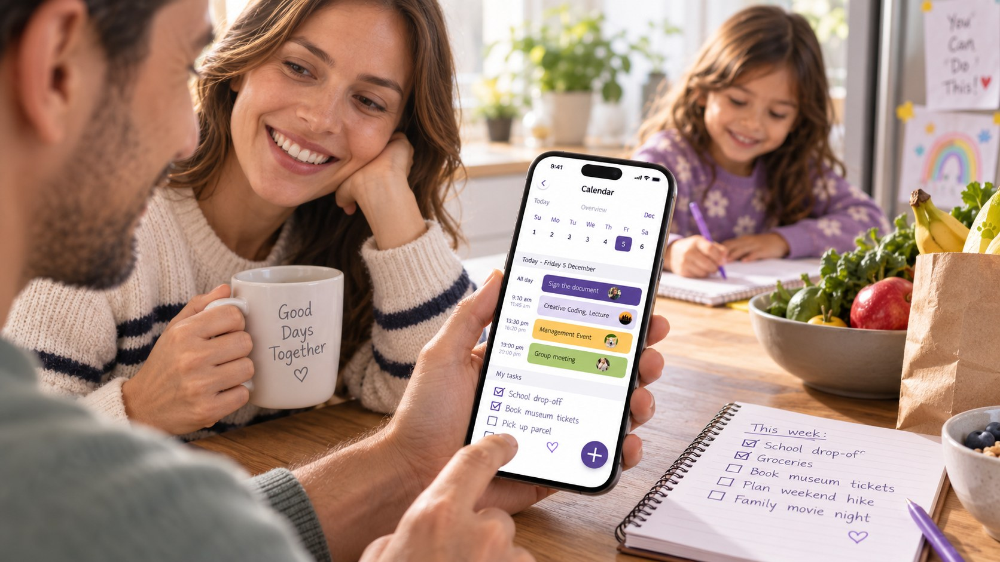
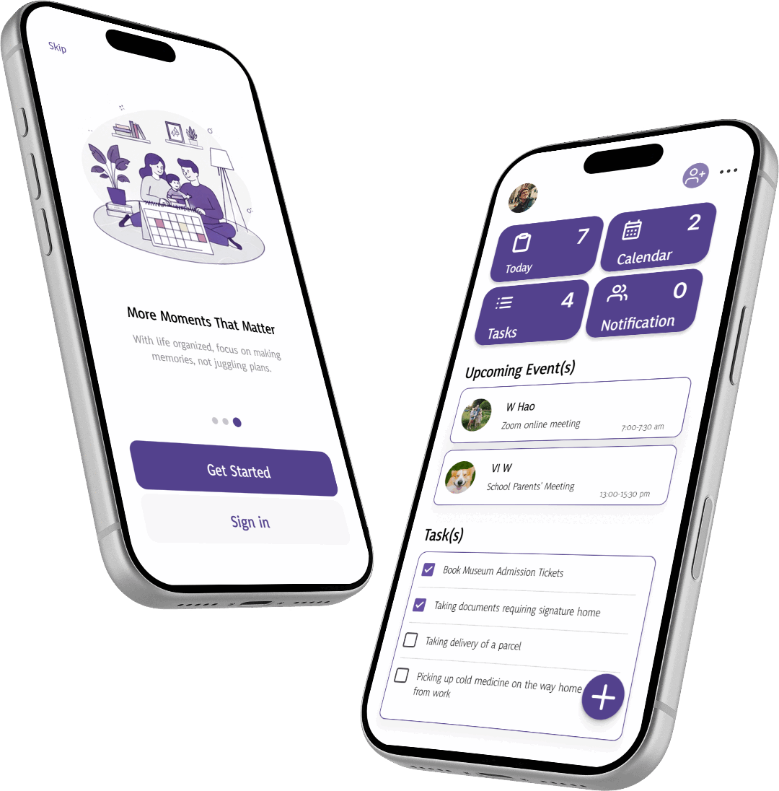

FamilyFlow
一个帮助家庭成员共享日程、任务与提醒的协作类 App。
项目背景
家庭日程往往分散在聊天软件、个人日历和纸质记录中，容易造成信息遗漏、时间冲突和临时变更不同步， 增加家庭日常协调成本。
业务诉求
打造一个以家庭协作为核心的共享日程产品，集中管理家庭成员的日程、任务与变更信息， 提升家庭安排的清晰度与协作效率。
用户诉求
| 统一查看：集中查看全家日程与任务 | 成员清晰：快速区分不同家庭成员的安排 | 责任明确：明确接送、购物等事项的负责人 |
| 及时同步：重要变更及时通知相关成员 | 操作简单：快速创建、修改、确认日程 | 减少冲突：提前发现时间与任务安排冲突 |

竞品分析
| 产品 | 优点 |
|---|---|
 Cozi Family Organizer
Cozi Family Organizer
|
家庭场景定位清晰，日历、任务和购物清单集中在同一产品里，功能结构完整。 |
 FamilyWall
FamilyWall
|
围绕"家庭中心"的概念展开，把日程管理和家庭协作绑定在一起，鼓励全家共同参与。 |
 TimeTree
TimeTree
|
体验足够轻量，围绕具体日程展开沟通，减少了日程和聊天工具之间来回切换的成本。 |
 Apple Calendar
Apple Calendar
|
交互成熟简洁，创建和查看日程的效率很高，几乎没有额外的学习成本。 |
业务目标
建立一个统一、清晰、易协作的家庭日程管理平台，减少信息分散和重复沟通， 提高家庭成员处理日常安排与临时变化的效率。
设计目标
- 全家日程一目了然
- 成员与责任清晰可辨
- 临时变更快速处理
- 重要信息准确触达
- 核心操作简单高效

设计实施
设计策略
围绕"信息集中—成员可视化—责任明确—变更同步—降低门槛"五个方向，把设计目标落到具体的产品结构上。
信息集中
统一承载家庭日程、任务、成员和提醒信息。
成员可视化
通过头像、颜色和标签建立清晰的成员识别体系。
责任明确
为家庭事项设置负责人、确认状态和完成状态。
变更同步
强化临时改期、成员变更和相关人员通知能力。
降低门槛
延续用户熟悉的日历操作方式，减少复杂设置和学习成本。
设计方案
家庭共享日历
统一展示所有家庭成员的日程。
家庭周览
快速掌握一周整体安排和时间冲突。
成员管理
通过头像、颜色和权限区分不同家庭成员。
共享任务
支持创建、分配和确认接送、购物等家庭事项。
智能提醒
针对重要活动、任务和临时变化进行提醒。
冲突提示
识别成员之间的时间冲突和安排冲突。
快速改期
修改日程后同步受影响的家庭成员。
快捷加入
降低家庭成员加入和完成基础设置的操作成本。
设计总结
本产品以家庭协作日程为核心，将分散的日程、成员、任务和变更信息集中管理。 通过清晰展示家庭安排、明确成员责任与及时同步变化，帮助家庭减少沟通成本与安排冲突， 让日常协调更加清晰、高效、可控。